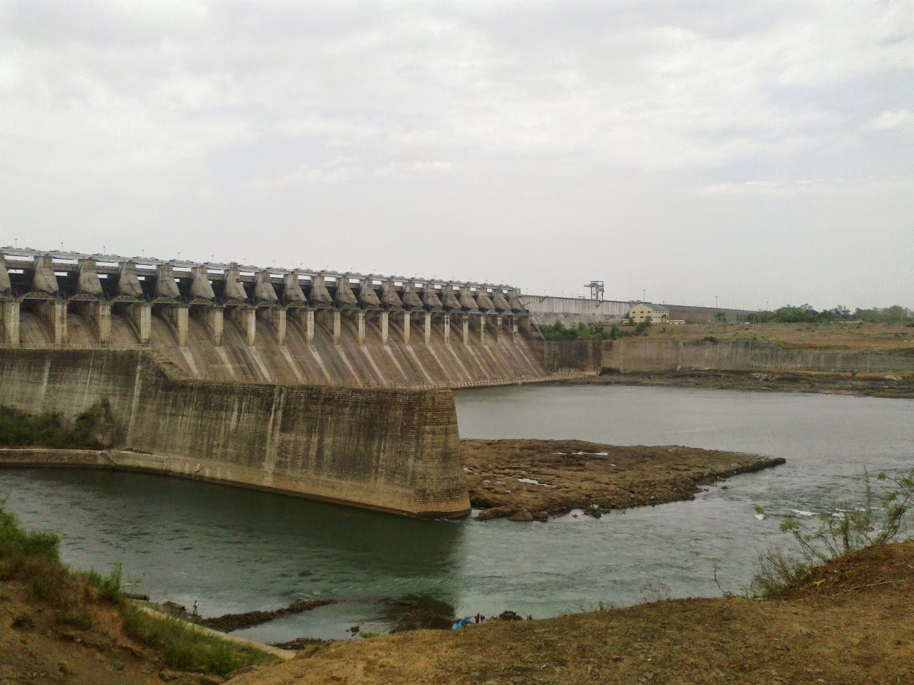

<!DOCTYPE html>
<html>
    <head>
        <title>Bargi dam</title>
        <link href="./tcpipcss.css" type="text/css" rel="stylesheet">
    </head>
</html>
<body>
    <a href="./tcp ip assignment.html">Back</a>
    <marquee behavior="alternate"><h1 id="Tops">BARGI DAM</h1></marquee>
    
    <video src="./vid-20160807-165652_XWrfEe1y.mp4" width="700" height="600" controls></video>
    <div class="cursive">
        <p>
            Bargi Dam is one of the first completed dams out of the chain of 30 major dams to be constructed on Narmada River in Madhya Pradesh, India. Here the Narmada river completely overlaps and submerges the Bargi River such that Bargi's independent existence is not noticeable. Two major irrigation projects, named Bargi Diversion Project and Rani Avantibai Lodhi Sagar Project, have been developed by the Bargi Dam administration. The Narmada is the largest river in Madhya Pradesh, flowing towards the west and falling in the Arabian Sea. Its total length is 1312 km of which it covers 1072 km in Madhya Pradesh.

            The Central Water and Power Commission conceptualized the proposal of this dam construction in 1968 envisaging irrigation in 2,980 square kilometres and hydropower generation capacity of 100 MW (2x45 MW + 2x5 MW). (Source: DPR, Govt of M.P. 1968). Later the Bargi diversion scheme was planned, increasing the total irrigation potential to 4,370 square kilometres. The dam construction work started in 1974 and was completed in 1990 when the dam was filled to its complete capacity. Although the proposed power generation was 105 MW, currently only 90 MW is being generated in this HydroPower Generation Plant. Two independent units of 45 MW each have been set up and they function mainly during the evening peak in demand.
            
            The height of the dam is 69 m and length 5.4 km. A lake of about 75 km in length and 4.5 km width, spreading over 267.97 km² in Jabalpur, Mandla and Seoni districts, is formed when the water is impounded up to the dam FRL of 422.76 m.
        </p>
    </div>
    <a href="#Top">Top</a>
</body>
</html>s
